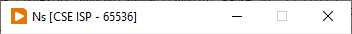
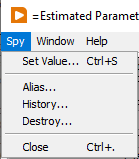
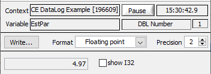
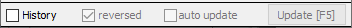

VarMan Spy is a utility that allows users to monitor and manage objects within VarMan.
Use LabVIEW Context Help (Ctrl-H) to get information on the controls and indicators of VarMan Spy and its dialogs.
Specifies what to show in the Variable List.
Displays list of all Variable Contexts existing in VarMan. The list has two columns:
<right-click> opens a shortcut menu with available options.
<double-click> on a context opens a dialog box with more details on the context if Display mode is Variables; otherwise, this switches Display mode to Variables and makes Variable List display variables of the context.
<double-click> on a column header sorts the list on this column.
Depending on the Display mode selector, the list can indicate information on either variables or aliases. In the Variables display mode, the list displays brief information on the variables in the selected context. In the Aliases display mode, the list displays brief information on all existing aliases associated with variables, regardless of their contexts.
<right-click> opens a shortcut menu with available options.
<double-click> opens a probe window (Variable Inspector) that lets you review the current value and history (if attached) of the variable. You can also select several variables at once and open probes for them by using a shortcut menu.
<Ctrl>+<double-click> opens a dialog to set a variable value.
VarMan Spy opens an independent Variable Inspector window for every variable you want to monitor. The Inspector displays detailed information on the monitored variable and gives you full control over it. The Inspector window is open until you close it or the monitored variable is destroyed.

Every Inspector window has a unique title that indicates information on the monitored variable. If the variable has an alias associated, the title displays the alias with a leading equal sign ( = ). Otherwise, the title displays the variable name and information on the context where the variable exists.
 |
Set value... option opens a dialog box to assign a value to the monitored variable. Alias... option opens a dialog box to control the alias association for the monitored variable. Use it to create, rename or destroy the variable's alias. History... option opens a dialog box to control a history of the monitored variable. Use it to attach, detach, reset or reconfigure a history. Destroy... option destroys the monitored variable. Close... option closes the Inspector window. |

Here, the Inspector displays information on the monitored variable including the variable name, context, data type and value. The Inspector automatically updates the variable value indicator to display the current value, unless the Pause button is pushed. The time indicator shows the timestamp of the displayed value. In addition, there are some controls that allow you to choose the display format for the variable value.

Controls on the history toolbar are only active if the monitored variable has a history attached.
History checkbox makes the Inspector display a variable history if it is checked. The Inspector displays a variable history indicator below the history toolbar and enables another controls on the history toolbar when History checkbox is checked.
reversed checkbox specifies an order in which a history is displayed. You can review a history in either direct or reversed chronological order.
auto update checkbox makes the Inspector automatically update a history if it is checked.
Update [F5] button makes the Inspector update the history when it is clicked or the F5 key is pressed on the keyboard.